Curated flavours for your soul.
Bon Appétit!
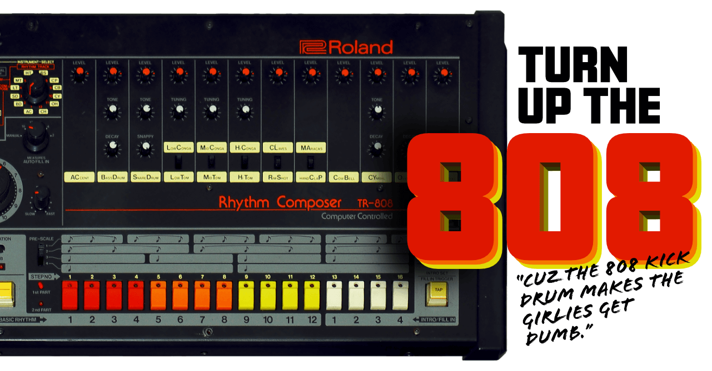
Part One
Roland started the saga of manufacturing drum machines since 1963, and TR-808 was their 25th model released during 1980. When they released the 808, the drum machines market was already mature enough to have expensive machines like Linn LM-1 - a hardcore competitor of 808 with a price tag above $5000, which use samples of acoustic drums and allows the user to program the rhythm. On the other hand, 808 cost around $1200, and uses an analogue synthesiser to generate sound rather than samples, also allows the user to program the rhythm. But, because of synthesising technology, the output of the 808 doesn't sound realistic and led it into a market failure. But, the interesting fact is, the real story of 808 actually starts from here!
Because of market failure, with in one year the price of 808 dropped from $1200 to $100. This became a blessing for underground music producers, and they started experimenting with the machine. As a result, genres like Electro, Techno, Miami Bass where born, with 808 embedded deep into their DNA.
Prelude
The first usage of 808 was in a live performance by the Japanese electronic experimental band called “Yellow Magic Orchestra”. But, the first band to use it in a record is an Australia electronic new-wave band called “The Monitors” on their album “Nobody Told Me”, released in 1981. A year after, “Marvin Gaye” used 808 in his hit track "Sexual Healing" which took 808 into the mainstream.
-
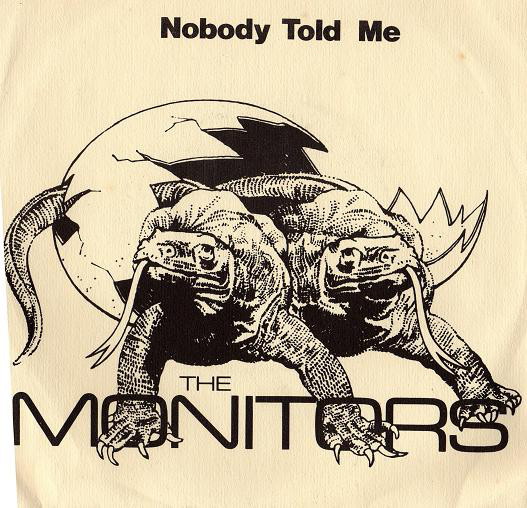
Nobody Told Me
by The Monitors
Electronic • New Wave • Synth Pop • 1981
-
Nobody Told Me
PLAY
-
-
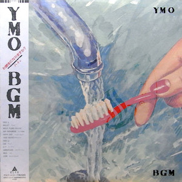
BGM
by Yellow Magic Orchestra
Electronic • Synth Pop • 1981
-
1000 Knives, 千のナイフ
PLAY
-
-
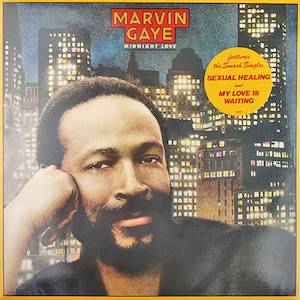
Midnight Love
by Marvin Gaye
Soul • Funk • Disco • 1982
-
Sexual Healing
PLAY
-
Electro
Electro – an amalgam of funky rhythms, 808, vocoders and lust. A sub-genre evolved from hip-hop during the '80s, which defined how the urban should sound in the future. Started when Afrika Bambaataa and the Soul Sonic Force carved the stepping stone called Planet Rock in 1982. Since then, electro is there in the dance floors, evolving with us into different styles.
-
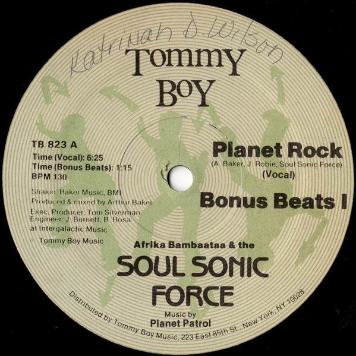
Planet Rock
by Afrika Bambaataa & the Soul Sonic Force
Electronic • Hiphop • Electro • 1982
-
Planet Rock (Vocal)
PLAY
-
-
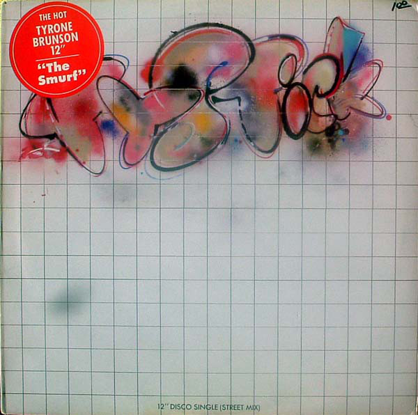
The Smurf
by Tyrone Brunson
Electronic • Funk • Electro • 1982
-
The Smurf
PLAY
-
-

Hip Hop, Be Bop (Don't Stop)
by Man Parrish
Electronic • Hip Hop • Electro • 1982
Hip Hop, Be Bop (Don't Stop)
PLAY
-

Body Mechanic
by Quadrant Six
Electronic • Electro • 1982
Body Mechanic (Vocal)
PLAY
-
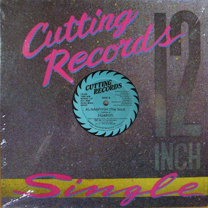
Al-Naafiysh (The Soul)
by Hashim
Electronic • Hiphop • Electro • 1983
-
Al-Naafiysh (The Soul)
PLAY
-
-
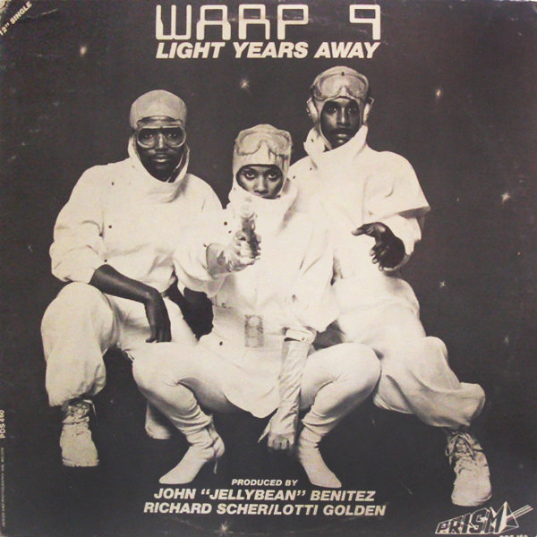
Light Years Away
by Warp 9
Electronic • Hiphop • Electro • 1983
-
Light Years Away
PLAY
-
-
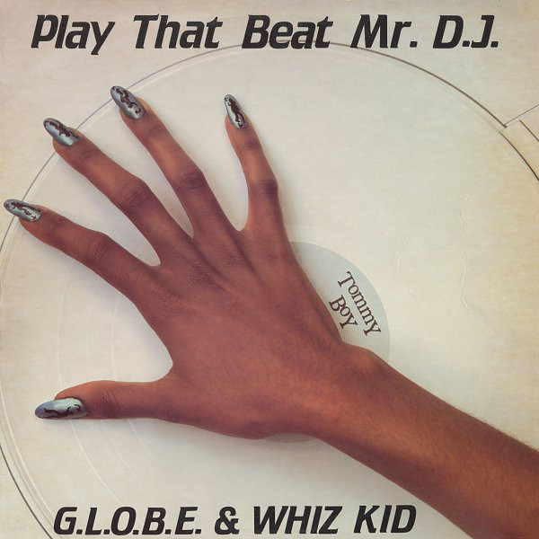
Play That Beat Mr. D.J.
by G.L.O.B.E. & Whiz Kid
Hiphop • Electro • 1983
-
Play That Beat Mr. D.J. (Full length)
PLAY
-
-
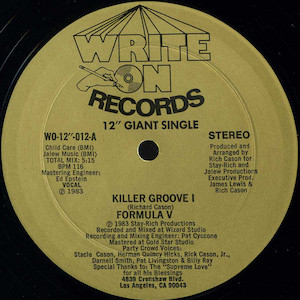
Killer Groove
by Formula V
Electronic • Electro • Funk • 1983
-
Killer Groove I (Vocal)
PLAY
-
-
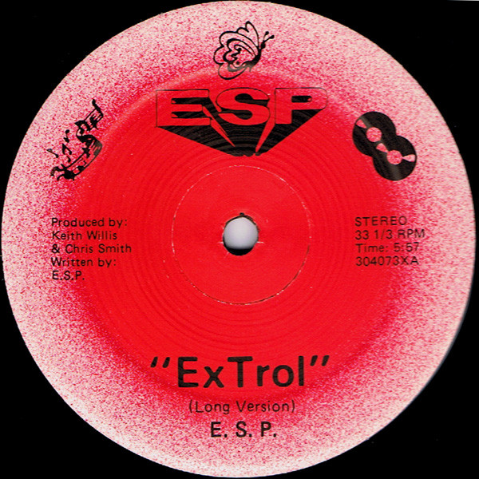
ExTrol
by E.S.P
Electronic • Electro • 1983
-
ExTrol (long version)
PLAY
-
-
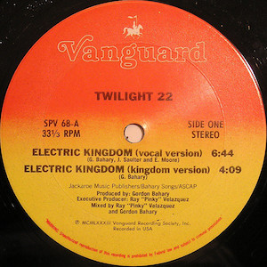
Electric Kingdom
by Twilight 22
Electronic • Hiphop • Electro • 1983
-
Electric Kingdom (Vocal Version)
PLAY
-
-
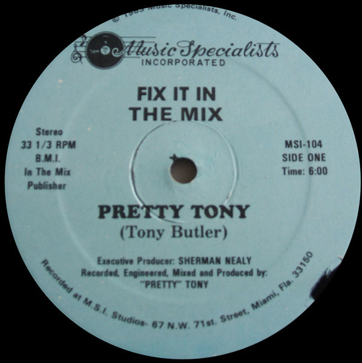
Fix It in the Mix
by Pretty Tony
Electronic • Electro • 1983
-
Fix It in the Mix
PLAY
-
-
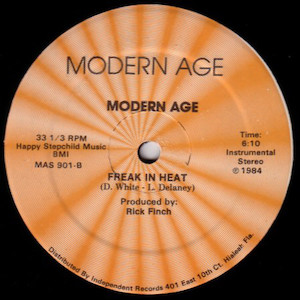
Freak In Heat
by Modern Age
Electronic • Hiphop • Electro • 1984
-
Freak In Heat
PLAY
-
-
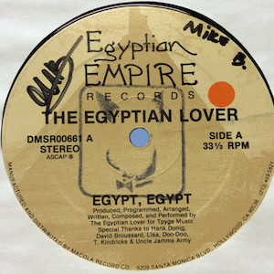
Egypt, Egypt
by The Egyptian Lover
Electronic • Hiphop • Electro • 1984
-
Egypt, Egypt
PLAY
-
-
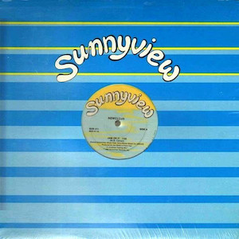
Jam On It
by Newcleus
Electronic • Hiphop • Electro • 1984
-
Jam On It
PLAY
-
-
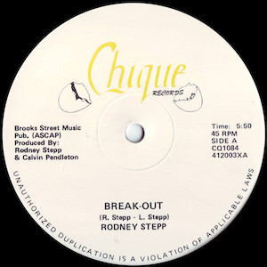
Break Out
by Rodney Stepp
Electronic • Hiphop • Electro • 1984
-
Break Out
PLAY
-
-
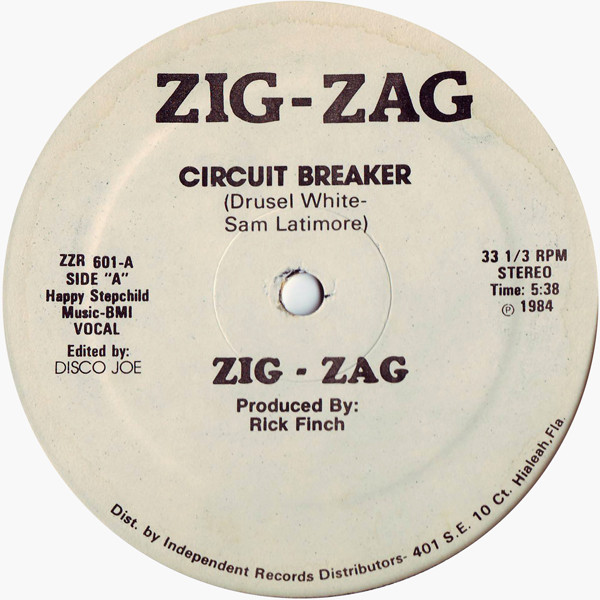
Circuit Breaker
by Zig Zag
Electronic • Hiphop • Electro • 1984
-
Circuit Breaker (Vocal)
PLAY
-
-

We Come To Rock
by Imperial Brothers
Hip Hop • Electro • 1984
We Come To Rock (Club Version)
PLAY
-

B-Boys Breakdance
by High Fidelity Three
Electronic • Hip Hop • Electro • 1984
B-Boys Breakdance
PLAY
-

Boogie Down (Bronx)
by Man Parrish,Freeze Force
Electronic • Hip Hop • Electro • 1984
Boogie Down (Bronx)
PLAY
-
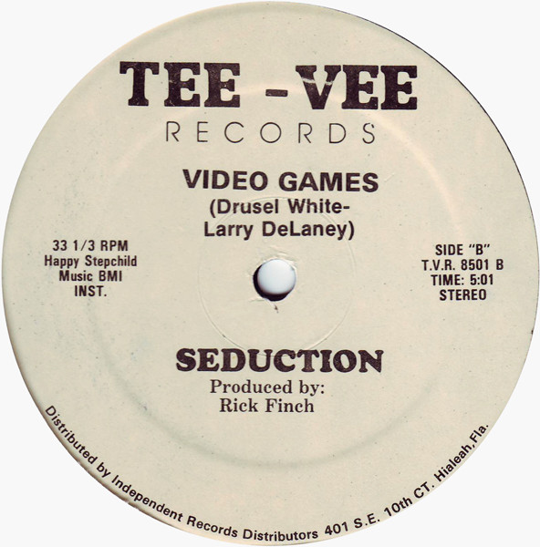
Video Games
by Seduction
Electronic • Hiphop • Electro • 1985
-
Video Games
PLAY
-
-
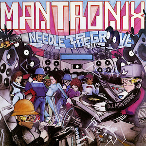
Needle To The Groove
by Mantronix
Hiphop • Electro • 1985
-
Needle To The Groove
PLAY
-
-

Don't Stop The Rock
by Freestyle
Electronic • Hip Hop • Electro • 1985
Don't Stop The Rock
PLAY
-

Computer Power
by Jamie Jupitor
Electronic • Electro • 1985
Computer Power
PLAY
-

It's Automatic
by Freestyle
Electronic • Electro • 1986
It's Automatic
PLAY
-

Me And Joe
by Rodney O & Joe Cooley
Hip Hop • Electro • 1988
Everlasting Bass
PLAY
Freestyle
Freestyle is a form of electronic music derived from Electro, Synth and Latin music, developed in the early 1980s, primarily in the Hispanic and Italian-American communities. When it started, freestyle was more inclined toward electro style in favour of breakdancing. And by 1987, it started getting more traction on radio, and a new era of pop-crossover style was born, which is not dead yet.
-

When I Hear Music
by Debbie Deb
Electronic • Freestyle • Electro • 1983
When I Hear Music
PLAY
-

Let The Music Play
by Shannon
Electronic • Funk / Soul • Freestyle • Electro • Funk • 1984
Let The Music Play
PLAY
-

Breaker's Revenge
by Arthur Baker
Electronic • Freestyle • Electro • 1984
Breaker's Revenge (Extended Vocal Version)
PLAY
-

All Night Passion
by Alisha
Electronic • Freestyle • Electro • Disco • 1984
All Night Passion (Club Mix)
PLAY
-

Honey To A Bee
by Tina B
Electronic • Freestyle • Electro • 1984
Honey To A Bee (Vocal / Extended Version)
PLAY
-

Give Me Tonight
by Shannon
Electronic • Electro • 1984
Give Me Tonight
PLAY
-

I Wonder If I Take You Home
by Lisa Lisa & Cult Jam,Full Force
Electronic • Freestyle • Electro • 1985
I Wonder If I Take You Home (Extended Version)
PLAY
-

Funky Little Beat
by Connie
Electronic • Freestyle • 1985
Funky Little Beat
PLAY
-

Can You Feel The Beat
by Lisa Lisa & Cult Jam,Full Force
Electronic • Freestyle • Electro • 1985
Can You Feel The Beat
PLAY
-

(You Are My) All And All
by Joyce Sims
Electronic • Freestyle • Electro • 1986
(You Are My) All And All (Take Twelve)
PLAY
-

Summertime, Summertime
by Nocera
Electronic • Pop • Freestyle • Electro • 1986
Summertime, Summertime (Club)
PLAY
-

Show Me
by The Cover Girls
Electronic • Freestyle • 1986
Show Me
PLAY
-

I Won't Stop Loving You
by C-Bank,Diamond Eyes
Electronic • Freestyle • Latin • 1986
I Won't Stop Loving You (Club Mix)
PLAY
-

Let Me Be The One
by Safire
Electronic • Freestyle • 1987
Let Me Be The One (Vocal)
PLAY
-

Security
by The Beat Club
Electronic • Freestyle • Electro • 1988
Security (Radio Mix)
PLAY
-

Say It's Gonna Rain
by Will To Power
Electronic • Freestyle • 1988
Say It's Gonna Rain (Extended Mix)
PLAY
-

It's Too Late
by Nayobe
Electronic • Freestyle • House • 1988
It's Too Late (Club Mix)
PLAY
End of Part
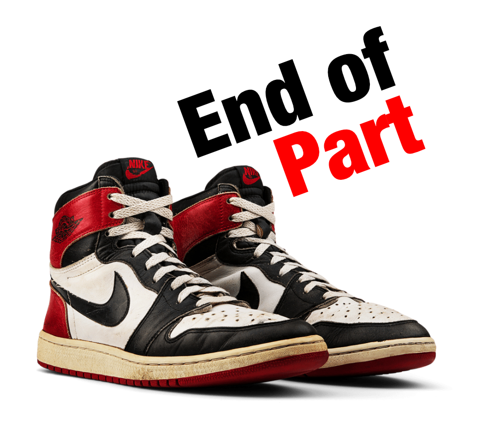
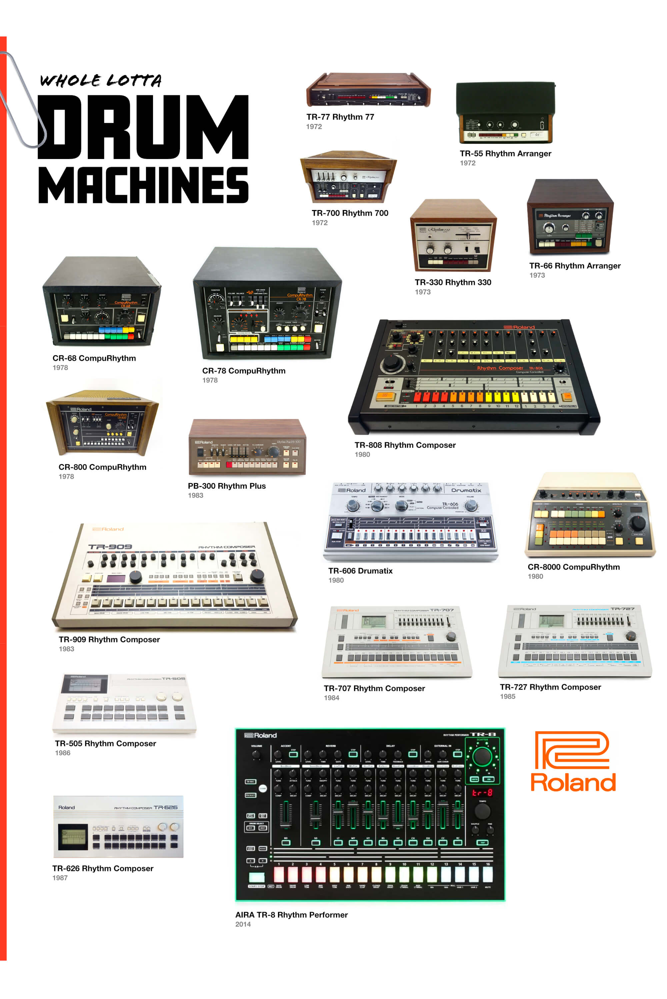
Part Two
Miami Bass
Without 808, there is no booty bass! Miami bass or booty bass is a sub-genre of hip-hop derived from electro during the mid-80s. It's all about the stories from the hood, in a dance tempo backed with heavy uncompressed bass from 808, to tears your speaker.
-

Bass Rock Express
by MC ADE
Electronic • Electro • 1985
Bass Rock Express (Vocal)
PLAY
-

I've Gotta Be Tough
by MC Shy D
Hip Hop • Miami Bass • 1986
I've Gotta Be Tough
PLAY
-

Bass Town
by Party Rock Crew
Hip Hop • Miami Bass • 1986
Bass Town
PLAY
-

Boot The Booty
by MC Cool Rock & MC Chaszy Chess
Hip Hop • Miami Bass • 1987
Boot The Booty (Vocal)
PLAY
-

Give It All You Got (Doggy Style)
by Afro-Rican
Hip Hop • Electro • Miami Bass • 1987
Give It All You Got (Doggy Style) (Radio Mix)
PLAY
-

Welcome To The Planet Of Bass
by Maggotron
Hip Hop • Miami Bass • Electro • 1987
Basside
PLAY
-

Just Give The D.J. A Break
by Dynamix II,Too Tough Tee
Electronic • Hip Hop • Electro • Miami Bass • 1987
Just Give The D.J. A Break (Vocal)
PLAY
-

My Hardcore Rhymes / Everybody Say Yeah
by Le Juan Love
Hip Hop • Miami Bass • 1987
My Hardcore Rhymes
PLAY
-

Gucci Bass
by Gucci Crew II
Electronic • Hip Hop • Miami Bass • 1987
Gucci Bass
PLAY
-

Cars With The Boom
by L'Trimm
Electronic • Hip Hop • Miami Bass • Electro • 1988
Cars With The Boom
PLAY
-

Rock This Planet
by Bass Patrol
Electronic • Hip Hop • Electro • Miami Bass • 1988
Rock This Planet
PLAY
-

Shake Your Pants
by Gigolo Tony
Hip Hop • Miami Bass • 1988
Shake Your Pants
PLAY
-

Getting Off
by Miami Boyz
Hip Hop • Miami Bass • 1988
Do You Want To Party
PLAYMiami Boyz Ready To Go
PLAY
-

Drop The Bass
by M.C. Boo,DJ Magic Mike
Hip Hop • Miami Bass • Electro • 1989
Drop The Bass (Club Version)
PLAY
-

I Got Your Boyfriend
by MC Luscious
Hip Hop • Miami Bass • 1989
I Got Your Boyfriend
PLAY
-

Bass Computer
by Techmaster P.E.B.
Electronic • Hip Hop • Miami Bass • Electro • 1991
Bass Computer
PLAY
Favela Funk
Favela Funk also knows as Funk Carioca or Baile Funk, a sub-genre from Rio De Janeiro, derived from Miami Bass, Freestyle and Rap. The best part of the Favela funk is there no direct use of 808 directly in production. Instead, they use samples of 808 that collected and compiled from Miami Bass records. And why Miami Bass? Because Miami is the next stop for Brazillian DJs to get records.
-

Funk Brasil
by DJ Marlboro
Electronic • Hip Hop • Bass Music • Favela Funk • 1989
Rap Das Aranhas (Rock Das Aranhas)
PLAYEntre Nessa Onda
PLAYRap Do Arrastão
PLAYMelô Dos Números
PLAYMelô Do Bêbado
PLAYMelô Do Bicho
PLAYMelô Da Mulher Feia (Do Wah Diddy)
PLAYMarlboro Medley
PLAY
-

The Culture Of Rap
by Pepeu (3)
Hip Hop • Latin • Favela Funk • 1989
Hey Vovô
PLAY
End of Part
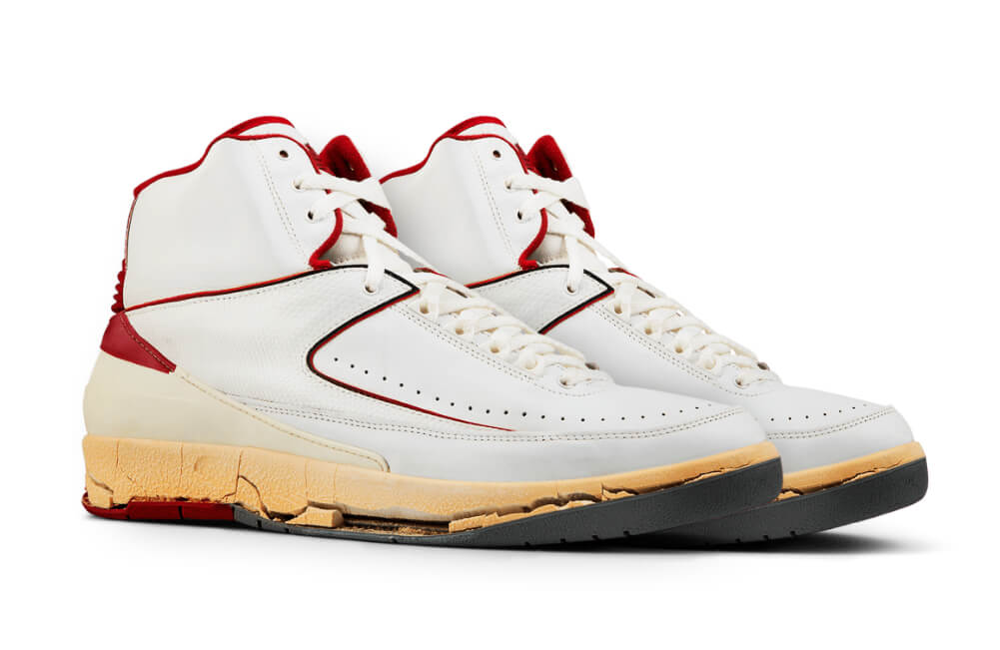
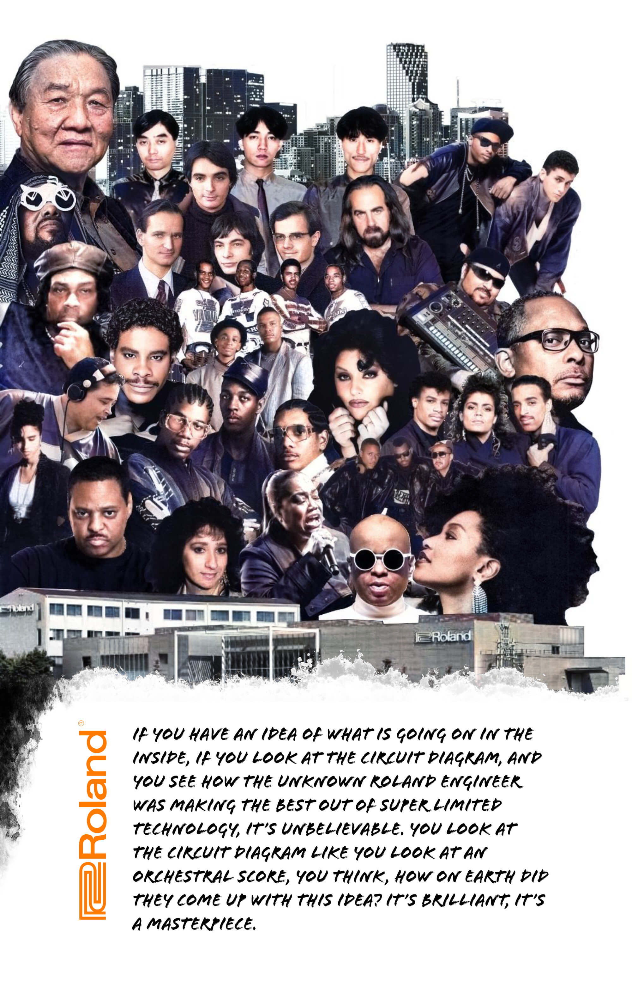
Part Three
Chicago House
"The whole thing started with a drum machine!" - Jesse Saunders; House music is a form of electronic dance music started in Chicago during the mid-1980s, derived from electronic, disco and funk. It's all started as an underground subculture, later gained more popular among the Black American LGBT community and now, it's mainstream! And you can find different flavours of house music like acid house, tech house and many more.
-

On And On
by Jesse Saunders
Electronic • House • 1984
On And On
PLAY
-

Fantasy
by Z-Factor,Jesse Saunders
Electronic • House • 1984
Fantasy (Vocal)
PLAY
-

The D.J.
by Z-Factor
Electronic • House • Electro • 1984
The D.J.
PLAY
-

Jack Trax
by Mirage (14),Chip E.
Electronic • House • Acid House • 1985
Time To Jack
PLAY
-

No Way Back
by Adonis
Electronic • House • 1986
No Way Back (Vocal)
PLAY
-

Rhythem Method
by Mink
Electronic • House • 1987
Rhythem Method (Radio Method)
PLAY
-

Bang The Box
by Matt Warren
Electronic • House • 1987
Bang The Box (Bang The House Mix)
PLAY
-

Work It
by Chicago Music Syndrome
Electronic • House • 1987
Work It
PLAY
Detroit Techno
"The whole thing started with a drum machine!" - Jesse Saunders; House music is a form of electronic dance music started in Chicago during the mid-1980s, derived from electronic, disco and funk. It's all started as an underground subculture, later gained more popular among the Black American LGBT community and now, it's mainstream! And you can find different flavours of house music like acid house, tech house and many more.
-

Cosmic Cars
by Cybotron
Electronic • Techno • Electro • 1982
Cosmic Cars
PLAY
-

Clear
by Cybotron
Electronic • Hip Hop • Electro • 1983
Clear
PLAY
-

I'm Your Audio Tech
by Audio Tech
Electronic • Electro • 1987
I'm Your Audio Tech
PLAY
-

Sound Of Stereo / Off To Battle
by Model 500
Electronic • Techno • 1987
Sound Of Stereo (Revamp)
PLAY
Italo Disco
"The whole thing started with a drum machine!" - Jesse Saunders; House music is a form of electronic dance music started in Chicago during the mid-1980s, derived from electronic, disco and funk. It's all started as an underground subculture, later gained more popular among the Black American LGBT community and now, it's mainstream! And you can find different flavours of house music like acid house, tech house and many more.
-

Spacer Woman
by Charlie
Electronic • Italo-Disco • Electro • 1983
Spacer Woman (Vocal)
PLAY
-

Take A Chance
by Mr. Flagio
Electronic • Italo-Disco • Electro • 1983
Take A Chance (Vocal Version)
PLAY
-

Problèmes D'Amour
by Alexander Robotnick
Electronic • Italo-Disco • 1983
Problèmes D'Amour
PLAY
-

Feel The Drive
by Doctor's Cat
Electronic • Italo-Disco • 1983
Feel The Drive (Vocal)
PLAY
-

Nonline
by International Music System
Electronic • Italo-Disco • Electro • Synth-pop • 1983
Nonline
PLAY
-

On And On (Fears Keep On)
by Decadance (2)
Electronic • Italo-Disco • Chillwave • Minimal • 1983
On And On (Fears Keep On)
PLAY
-

Rap-O-Hush
by Marzio Dance
Electronic • Italo-Disco • 1983
Rap-O-Hush (Original Version)
PLAY
-

Ba Ba Go, Go
by Topo (3)
Electronic • Italo-Disco • 1983
Ba Ba Go, Go
PLAY
-

I'm Hungry
by Stopp
Electronic • Italo-Disco • 1983
I'm Hungry
PLAY
-

Magical Body
by Los Angeles T.F.
Electronic • Italo-Disco • 1983
Magical Body (Vocal Version)
PLAY
Where Else?
"The whole thing started with a drum machine!" - Jesse Saunders; House music is a form of electronic dance music started in Chicago during the mid-1980s, derived from electronic, disco and funk. It's all started as an underground subculture, later gained more popular among the Black American LGBT community and now, it's mainstream! And you can find different flavours of house music like acid house, tech house and many more.
-

Situation
by Yazoo
Electronic • Synth-pop • 1982
Situation
PLAY
-

Just Be Good To Me
by The S.O.S. Band
Electronic • Funk / Soul • Disco • 1983
Just Be Good To Me
PLAY
-

Vivre Sur Vidéo / Living On Video
by Trans-X
Electronic • Euro-Disco • Hi NRG • 1983
Living On Video
PLAY
-

My Forbidden Lover
by Tapps
Electronic • Hi NRG • Synth-pop • Disco • 1983
My Forbidden Lover (Vocal)
PLAY
-

Cold Blooded
by Rick James
Electronic • Funk / Soul • Disco • 1983
Cold Blooded (Vocal)
PLAY
-

Rain Forest
by Paul Hardcastle
Electronic • Funk / Soul • Electro • Jazz-Funk • 1984
Sound Chaser
PLAY
-

Glowing In The Dark
by Experimental Products
Electronic • Synth-pop • Electro • 1984
Glowing In The Dark
PLAY
-

Feels So Real (Won't Let Go)
by Patrice Rushen
Funk / Soul • Funk • Boogie • 1984
Feels So Real (Won't Let Go) (LP Version)
PLAY
-

What's Your Name?
by Zinno
Electronic • Electro • Synth-pop • 1985
What's Your Name? (Long Version)
PLAY
-

Hangin' On A String (Contemplating) (Extended Dance Mix)
by Loose Ends
Electronic • Jazz • Funk / Soul • Rhythm & Blues • Soul • Smooth Jazz • 1985
Hangin' On A String (Contemplating) (Extended Dance Mix)
PLAY
-

19
by Paul Hardcastle
Electronic • Electro • Synth-pop • 1985
19
PLAY
-

One More Night
by Phil Collins
Rock • Soft Rock • 1985
One More Night
PLAY
-

My Adidas / Peter Piper
by Run-DMC
Hip Hop • 1986
My Adidas
PLAYPeter Piper
PLAY
-

Brass Monkey / Posse In Effect
by Beastie Boys
Hip Hop • 1986
Brass Monkey
PLAYPosse In Effect
PLAY
-

Flesh
by A Split - Second
Electronic • EBM • New Wave • 1986
Flesh
PLAY
-

Moving 808s / High Tek Dreams
by Optical
Electronic • Drum n Bass • 1997
Moving 808s
PLAY
-

Get Low
by Lil' Jon & The East Side Boyz,Busta Rhymes,Elephant Man,Ying Yang Twins
Hip Hop • 2003
Get Low (Remix)
PLAY
-

Yeah
by Usher,Lil' Jon,Ludacris
Hip Hop • Crunk • RnB/Swing • Pop Rap • 2004
Yeah!
PLAY
-

Ridin'
by Chamillionaire,Krayzie Bone
Hip Hop • 2005
Ridin' (Radio Edit)
PLAY
-

Ha / Panties (Live)
by HTRK
Electronic • Rock • Shoegaze • Lo-Fi • Minimal • 2008
Panties (Live)
PLAY
-

Beyoncé
by Beyoncé
Hip Hop • Pop • 2014
Drunk In Love
PLAY
-

Random Access Memories
by Daft Punk
Electronic • Funk / Soul • Pop • Disco • Funk • Electro • Synth-pop • 2013
Doin' It Right
PLAY
-

Chimes
by Hudson Mohawke
Electronic • Dubstep • 2014
Chimes
PLAY
End of Part
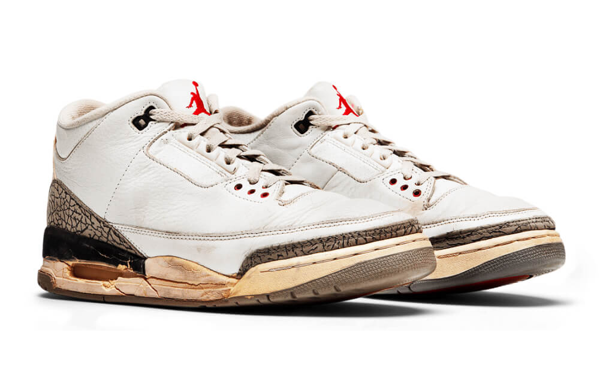
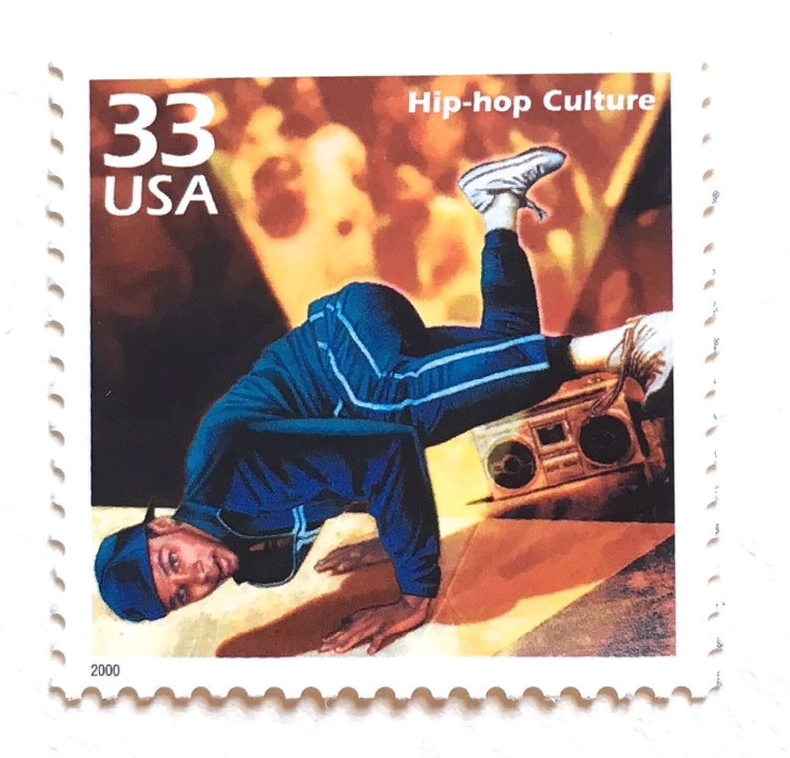
Sheila Chandra, British pop singer, main contributor of Indipop, and the first Asian to break into the UK charts. By birth she is British, but her cultural traits are rooted in South India. Over the time from 1981 to 2010, she had released more than fifteen albums and four singles, including the massive hit — "Ever So Lonely". And by 2010, she retired from the entertainment industry because of burning mouth syndrome.
By the age of 14, Sheila started her career as an actress in a BBC school drama series called Grange Hill. In the series, she played the role of a stereotypical Indian girl called Sudhamani Patel for four years from 1979 to 1981. But even before that, Shelia was a part of a band project by Hansa records, which didn't pick up. Same time, a British writer/producer called Steve Coe, a Hindi film song fanatic, who came across Shiela's voice through a cassette in a box of audition tapes lying around Hansa. Without a second thought, her voice clicked Steve, and thus a new world-pop band is born, called Monsoon.
Keeping Sheila as the centre of the band, Steve created four tracks by melding Indian music into western along with Martin Smith and Dari Mankoo. Being an experimental fusion, initially, the tracks didn't get much review and traction until they signed the agreement with Mobile Suit Corporation. When the song "Ever So Lonely" is released, first it got into the top of gay charts and then moved into the list of Top 10 hits of UK, and Sheila was only 16 when she made this landmark hit. Being a long-standing track in the charts, BBC invited the band to perform live on their Top of the Pops show. Eventually, the song climbed the charts of Europe and Australia, lately the US.
By seeing the success of Monsoon, the record company started interfering the band's creative freedom, which made frustrations between them. After six months, Sheila turned down the agreement with the record company and joined Steve's label called Indipop. With Indipop, she started to go solo and focus more on Asian fusion and drone style of singing. From 1984 to 2003, she released eight albums and even worked with realworld records by Peter Gabriel. By 2009, Sheila started seeing the symptoms of burning mouth syndrome and slowly retired from the show business, and started focusing on writing.
-
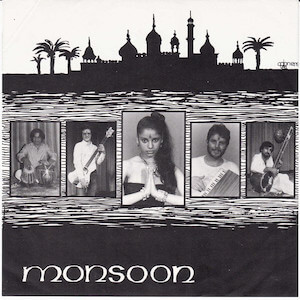
Ever So Lonely
by Monsoon
Pop • Ballad • Fusion • 1981
-
Ever So Lonely
PLAY
-
-
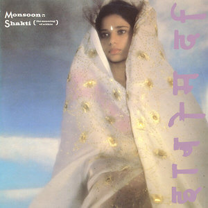
Shakti (The Meaning Of Within)
by Monsoon
Pop • Fusion • 1982
-
Shakti (The Meaning Of Within)
PLAY
-
-
Out On My Own
by Sheila Chandra
Electronic • Pop • Ambient • Ballad • Fusion • 1984
-
Out On My Own
PLAY -
Village Girl
PLAY -
Prema, Shanti, Dharma, Satya
PLAY -
Fly To Me
PLAY
-
-
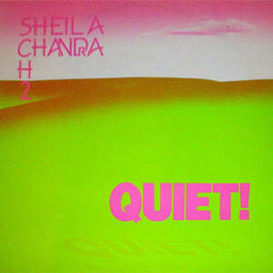
Quiet
by Sheila Chandra
Electronic • Ambient • Drone • Indian Classical • Fusion • 1984
-
Quiet 1
PLAY -
Quiet 2
PLAY -
Quiet 3
PLAY -
Quiet 4
PLAY -
Quiet 7
PLAY -
Quiet 10
PLAY
-
-
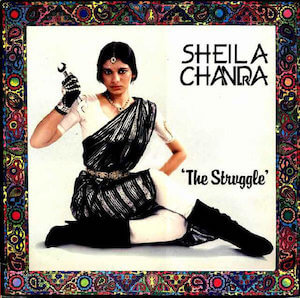
The Struggle
by Sheila Chandra
Pop • Leftfield • 1985
-
You
PLAY -
Lament
PLAY -
Om Shanti Om
PLAY
-
Saigon, an inevitable city from the world history, currently known as Ho Chi Minh, where human life dated even before the 4th century AD. Initially, this region was under the Khmer Dynasty, and by the 16th century, the Vietnamese refugee took it back from them. Later by mid of 19th century, French attacked them and took control of Saigon and changed it forever. During these days of French renovation on Saigon, for their own entertainment value, they introduced European style of music to the locals and started blending it with the traditional music. But the real resurrection of Vietnamese music happened during the time of the Vietnam war, when the American G.I.s introduced rock, funk and soul to the Vietnamese. And we can say - "That's the only good thing what war has brought into Vietnam, and that's how rock entered Vietnam". So let's tune our ears into those war fields, and check out some authentic Vietnamese rock & funk tracks, along with some history, and a bottle of Rượu đế.
In 1862, by signing the Treaty of Saigon, French took over the complete control of the Saigon, Côn Đảo Island and the other three provinces, and called it Cochinchine. Since then, the French went on a complete renovation on Saigon and turned it into a strategic point for the French occupied Indochine.
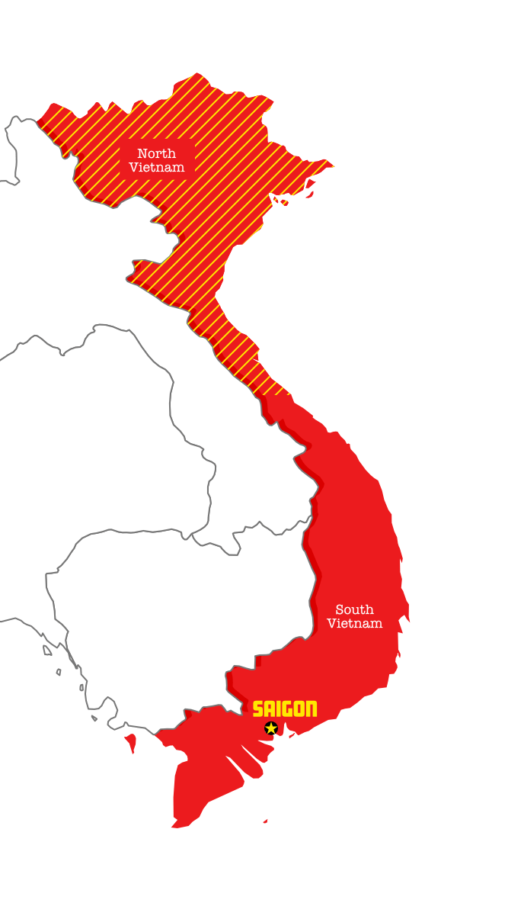
By the end of 19th century, they started bringing dramatic transformation to the architecture, transport, entertainment and lifestyle, which made Saigon into an international city called, Paris of the Orient. Along the side, the French built a monopoly on the opium and rice wine supply across Saigon and made it more exclusive for the upper-class, which lead to an influx of Europeans to the new Paris. According to a population census in 1906, Saigon had a total population of 55,750 including 30,000 Vietnamese, 13,000 Chinese, 6,000 French, 5,000 Other Europeans, 1,000 Indians, 500 Malays, 150 Cambodians and 100 Japanese. This census is enough to prove that, how busy and multi-cultured was Saigon at the beginning of the 20th century.In 1945, by the end of World War II, the Vietnamese Communist revolutionary leader Ho Chi Minh proclaimed Independence from France. And by the time, French tried to take back the power, guerrilla resistance started to break out in North Vietnam, which lead to the First Indochine war. From 1946 to 1954, eight years of battle, finally French and Viet Minh signed the Geneva Agreement and partitioned Vietnam into North, lead by the Viet Minh and South by the nationalist, a self-governing entity in French Empire with Saigon as its capital. Just after the partition, because of the Cold war and Domino theory, America started keeping an eye on North Vietnam. And Not so long, they began sending advisors and military personnel to South Vietnam to evangelise anti-communism. Along with these officials, they started bringing their favourite American rock and pop records, and that was the first wave of American music into Vietnam.
By the middle of the 1960s, in the peak of the Vietnam war, as the resistance from the North tightened, thousands of American soldiers started stationing at Saigon. And when these soldiers came, they also brought their favourite rock and soul records with them. Later in favour of them, local radios as well as pubs, they started playing these western records in full swing. Meanwhile, this music and lifestyle inspired a bunch of young Vietnamese musicians, who began to experiment with this new style that came from the west. And as a result, they blended funky breaks, guitar distorts, war, rebel and love into a spirit called, Vietnamese Rock.
The earliest rock music in Vietnam was performed by Filipino bands, to entertain Americans and other foreigners in Saigon's nightclubs. These groups provided help and mentoring to the first Vietnamese musicians who eventually joined them playing in bars and dancehalls. Meanwhile, most of these musicians and American soldier became good friends and their friendship streamlined supply of music and gears from the west. These resources enriched and inspired them to become more creative to pull out something which Vietnam has never heard, and that's how “Vietnamization of youth music” has happened. From then Vietnam had witnessed a vibrant era of rock, funk and soul songs, depicting the story of Vietnam and its war fields. But this glorious era of music didn't even last for a decade.
In 1975, the fall of Saigon, the communist army took control of the capital and put a conclusion to everything that American's had brought to Vietnam. They outlawed nearly all of the music created in the South, confiscated and destroyed books and magazines as well as sheet music and recordings. But the good news is, the government was not able to destroy every artefact, in fact, some got survived and got dug later by music lovers.
I really appreciate the people behind unearthing this died records, and especially sublime frequency for releasing the compilation of 17 high voltage Vietnamese tracks from 1968 to 1970.
-
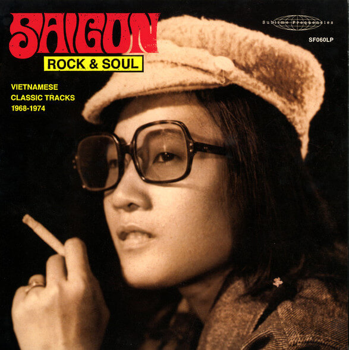
Saigon Rock & Soul
by Various Artist
Rock • Funk • Soul • 1968 - 74
-
Tinh Yêu Tuyệt Vời - Bich Loan & CBC Band
PLAY -
Bài Ca Ngông - Elvis Phương
PLAY -
Cái Trâm Em Cài - Carol Kim
PLAY -
Tóc Mai Sợi Vắn Sợi Dài - Thành Mái
PLAY -
Nỗi Buồn Con Gái - Carol Kim
PLAY -
Con Tim Và Nước Mắt - Bich Loan & CBC Band
PLAY -
Đêm Huyền Diệu - Phương Tâm
PLAY -
Sao Biển - Lệ Thu
PLAY -
Mặt Trời Đen - Minh Xuân & Phượng Hoàng
PLAY -
Bừng Sáng - Thái Thanh
PLAY -
Những Đóm Mắt Hoả Châu - Bang Chan
PLAY -
Chuyện Tình Sao Ly - Giao Linh
PLAY -
Kho Tàng Của Chúng Ta - Elvis Phương
PLAY -
Hoài Thu - Thanh Lan
PLAY -
Hờn Anh Giận Em - Hùng Cường & Mai Lệ Huyền
PLAY -
Duyên Phận Con Gái - Mai Lệ Huyền
PLAY -
Đố Ai - Phương Dung
PLAY
-
“They used music to speak of their aspirations, to speak of their indignation towards a life full of deceptions. And especially to show their point of view in the face of events occurring in their live”
– Trường Kỳ, Musician, pioneer of the Saigon youth movement

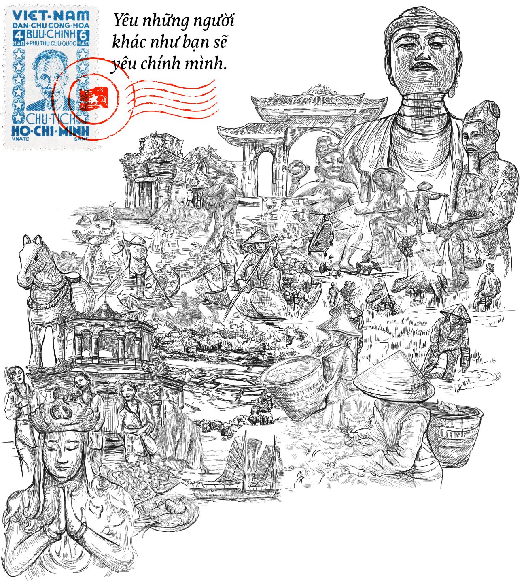
Ros Serey Sothea – One of the greatest female singer that Cambodian have ever witnessed. During her career, she had recorded and performed more than a thousand songs spanning multiple genres, and still, it's resonating in every Cambodian soul. On the other side, her personal life was full of miseries, and her fate is still a mystery. There's only a little information about Ros Serey Sothea's has survived as well as her master records, which got destroyed during the brutal Khmer Rouge regime. So in this playlist, I'm depicting the story for Ros Serey Sothea career and personal life along with her selected tracks.
Ros Sothea was born to a poor musical family on the countryside of Battambang in 1948. Being poor, her childhood was full hardships and pain. The primary income of the Ros family is by performing across the villages of Battambang as a traditional peasant band. But it was not a viable solution, so occasionally they struggled with money. Because of the instability in the income, her parents were not able to afford education, and she was raised without knowing how to read and write Khmer. As the struggle for the money gets more tightened, even at a young age, she joined the family band as a singer and performed with them. Over the time Ros and her brother became popular and became the cornerstone of the group.
In 1963, Ros friends pushed her to participate in the regional singing contest, and surprisingly her electrifying voice topped. On winning the competition, Ros and her voice became really popular across the Battambang province. Also, she got an invitation to join a local music troop who performs regularly at the Stung Khiev restaurant in Battambang region. Without any hesitation, Ros accepted the invitation and began singing with the troop; meanwhile, she continued playing with her family band and her brother.
By the withdrawal of French from Cambodia in 1953, Head of State Norodom Sihanouk, a musician himself, encouraged the development of popular music in Cambodia. Initially, pop records from France and Latin America were imported into the country. This inspired a lot of local musicians to form bands and business people to start record labels. By the late 60's the music industry based in Phnom Penh experienced rapid growth and started producing Cambodia's first real music stars. On hearing this news, Ros and her brother were encouraged to move to Phnom Penh, to seek their fortune.
On arriving Phnom Penh, they planned to perform on free spotlights in the local club, and just after their first performance, they got hired by a club as there regular singers. Over the time both of started performing in multiple clubs and Ros started getting more popular because of her voice. People very so captivated by her voice and her fan base began proliferating among both men and women. This popularity made Ros confident enough to pull out solo acts, later she decided to break out with her brother and continue solo. But she kept the name "Serey" with her name as a tribute to her brother, and Ros Sothea became Ros Serey Sothea.
1967, a couple of months after arriving Phnom Penh she signed the contract with a record label, and her debut hit "Stung Khieu" was aired across the Cambodian borders. During this time she had recorded and performed a lot of beautiful Cambodian classics, romvong, and folk songs. Because of her captivating voice, King Norodom Sihanouk gave her the title, “Preah Rheich Teany Somlang Meas", the "Golden Voice of the Royal Capital". It was the first time the King had given any singer such an honour.
At the same time, a new wave of music started emerging in Cambodia, Influenced by American radio that had been transmitted to U.S. troops in nearby South Vietnam. Young musicians started experimenting with American/British rock and soul sounds, and thus Garage rock and Psychedelic rock is born in Cambodia. This new wave of music influenced Ros, and she started to sing to heavy drum, distorted leads and showcased an intense and electrifying performance. There were other top female singers, but her voice made her different from others and made each song into a sensation. Eventually, she started collaborating with other legendary singers like Sinn Sisamouth, the Elvis of Cambodia and Pan Ron and made a lot of remarkable recordings.
While thriving in the industry, Ros was not at all happy with her personal life. When she moved to Phnom Penh, she was in an affair with a fellow singer called Sos Mat and ended up marrying him. But as Ros became famous, he became more jealous of her, and he started physically abusing her. After six months she took a divorce and went back to her village, thinking that she can't perform any more because of the social stigma of divorce. But Sinn Sisamouth motivated and convinced Ros to resume her singing career, and later married her. In their relationship, they had a son, but for some unfortunate reason, it didn't last for long. After Sinn Sisamouth, she get into a relationship with a high-ranking paratrooper. But again, this relationship also didn't last long because he got killed in combat. People believe that Sothea's unhappy relationships were a primary influence on her singing style and lyrics.
April 1975, Khmer Rouge marched into Phnom Penh and took control of the capital, suddenly Ros disappeared, and her exact fate has never been confirmed. Her sisters have allegedly claimed that Sothea is likely to have died immediately after the Khmer Rouge seized control of Cambodia. As a famous entertainer with "western" influences, qualities are widely known to be disdained by the Khmer Rouge, she would have been targeted for imprisonment or execution immediately. Many of Ros Serey Sothea's master recordings were either destroyed by the Khmer Rouge regime in its efforts to eliminate foreign influences from Cambodian society.
-
Cambodian Rocks
by Various Artist
Rock • Garage • Psychedelic • 60's - 70's
This album is a compilation of tracks by various artist, only Ros Serey Sothea's songs are listed below.-
Chnam Oun Dop-Pram Muy (I'm 16)
PLAY -
Tngai Neas Kyom Yam Sra (Today I Drink Wine)
PLAY -
Jam 10 Kai Thiet (Wait 10 More Months)
PLAY -
Jah Bong Ju Aim (Old Sour & Sweet)
PLAY -
Maok Pi Naok (Where Are You From?)
PLAY -
Kerh Snae Kyoum Thai (Have You Seen My Boyfriend?)
PLAY -
Chnang Jas Bai Chgn-Ainj (Old Pot, Tasty Rice)
PLAY -
Kone Oksok Nas Pa (We're Very Bored, Dad!)
PLAY -
Kom Kung Twer Evey (Don't Be Mad)
PLAY -
Penh Jet Thai Bong Mouy (I Like Only You)
PLAY -
Retrey Yung Joup Knea (The Night We Met)
PLAY
-


Born in the 1950's as an inspiration from the Rock and Roll, evolved into Psychedelic in the 60's, New wave, prog and meta in the 80's and still evolving. Because of the language barrier, the popularity stayed mostly in Italy and around Europe. But when you compare with the mainstream, there are artists like Zucchero who sold over 40 million records worldwide. I never knew about this until I got an Italian rock compilation CD called “9. La Babele degli stili” from my friends Anjali and Srihari. And my first
impression was double thumbs up. If you are also new to the Italian rock scene and like to listen, sharing the songs from the CD here. Divertiti ad ascoltare!
-
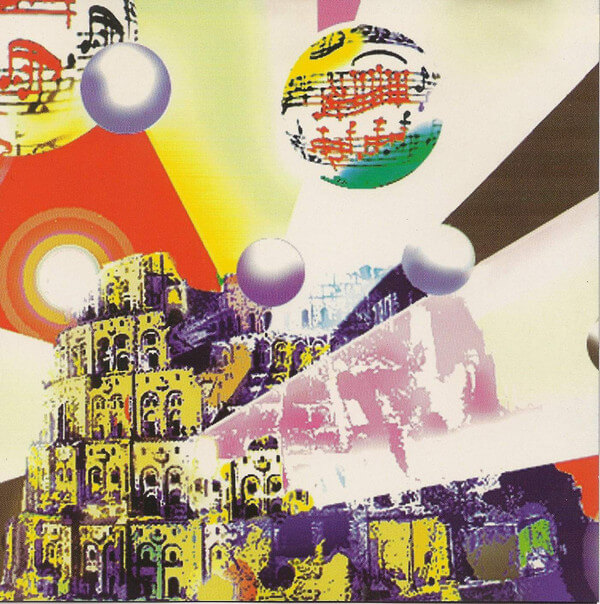
9. La Babele degli stili
by Various Artist
Rock • 1994
-
Musica musica by Pino Daniele
PLAY -
Rispetto by Zucchero
PLAY -
Colpa d'Alfredo by Vasco Rossi
PLAY -
Vil coyote by Eugenio Finardi
PLAY -
Ma che idea by Denovo
PLAY -
A me me piace 'o blues by Pino Daniele
PLAY -
L'ultima luna by Lucio Dalla
PLAY -
Creuza de ma (live) by Fabrizio De André
PLAY -
Con le mani by Zucchero
PLAY -
Guerra by Litfiba
PLAY -
Lidia magari by Bisca
PLAY -
And the radio plays by CCCP
PLAY -
Siberia - Diaframma
PLAY -
La qualità della danza - CCCP
PLAY
-
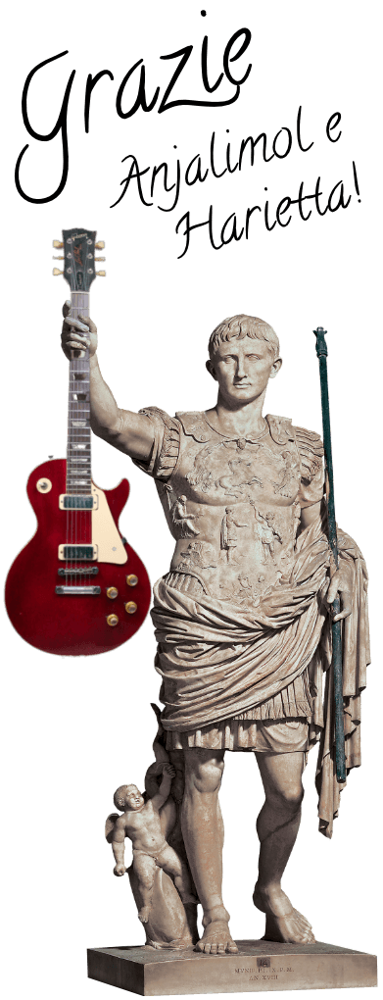
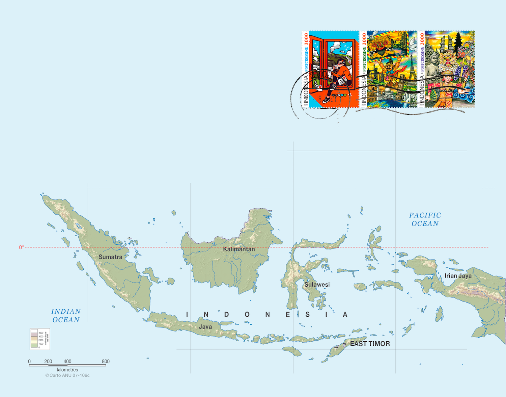
Selamat Datang di Indonesia Mas
Indonesia, one of the largest archipelago in the world with more than 17,000 islands, 261.6 M inhabitants and growing economy. Politically it's is divided into 36 provinces, 5 main religion with 700+ living languages, but united by the Pancasila. It's a country where you can easily get lost because of it's indulging history, vibrant culture, flavorful cuisine and heart-whelming hospitality. But all these factors are pretty common among all countries except one thing - “Music”.
Introducing you six decades of Indonesian soundscape through 70 tracks spanning across 13 genres and style. This is the biggest playlist that I ever made and dedicating this to Andi Twins Music, Gita Aditya Prasapti, Dwi Rustamto, Astri Farliani and all GoJek friends. Enjoy Listening!
Rock
I think this is the best genre to start with. Erupted during the early 60's and still influencing generations. Frankly speaking, it's very hard to fit all the best rock into a small playlist. In this section, I'm introducing the rock bands from the late 1980's to 2000's. So, Rock On!
-
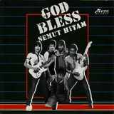
Semut Hitam
by God Bless
Hard Rock • 1988
-
Kehidupan
PLAY -
Rumah Kita
PLAY
-
-
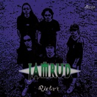
Putri
by Jamrud
Hard Rock • 1997
-
Putri
PLAY -
Bising
PLAY
-
-
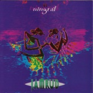
Ningrat
by Jamrud
Hard Rock • 2000
-
Ningrat
PLAY
-
-
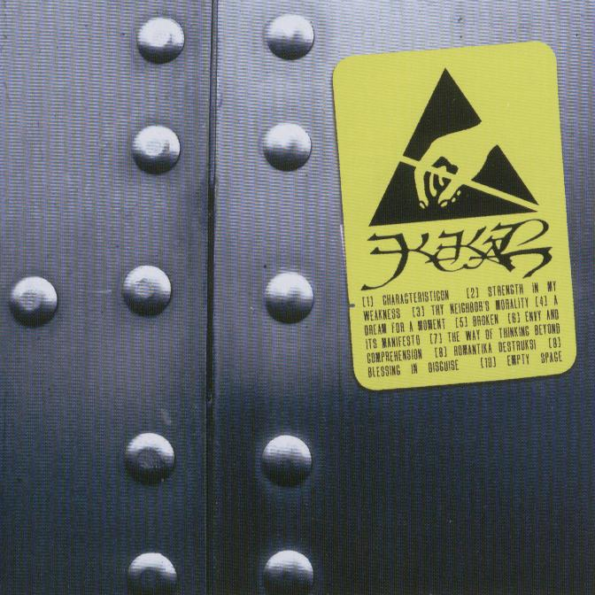
Acidity
by Kekal
Black Metal • Experimental • 2005
-
Characteristicon
PLAY
-
-
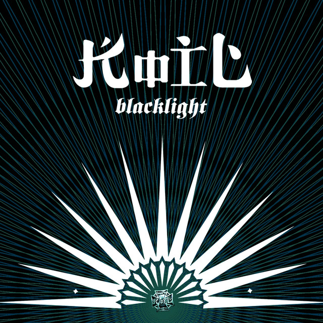
Blacklight
by Koil
Industrial Rock • 2007
-
Kenyataan Dalam Dunia Fantasi
PLAY
-
-
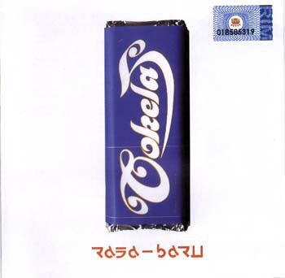
Rasa Baru
by Cokelat
Hard Rock • 2013
-
Karma
PLAY
-
-
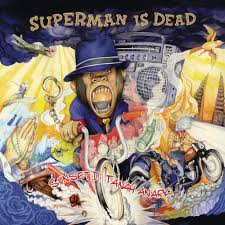
Sunset Di Tanah Anarki
by Superman is Dead
Punk • 2013
-
Bulan Dan Ksatria
PLAY -
Kita Adalah Belati
PLAY
-
-
Never Dies
by Kotak
Hard Rock • 2014
-
Satu Indonesia
PLAY
-
Classic Rock
Early 60's was a bad time for rock. The government at that time frowned upon rock and roll and the Beatlemania phenomenon, deeming the music and lifestyle as a decadent Western influence upon the nation’s youth. In 1965, rock and roll pioneers Koes Bersaudara (later known as Koes Plus) were arrested and jailed for three months for playing a Beatles song in a live performance. But whatever matters, the music produced during this time overruled all political barriers and became the foundation to all the songs that you listed above.
-
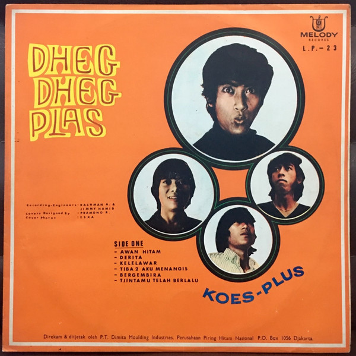
Dheg Dheg Plas
by Koes Plus
Rock • Pop • Folk • 1969
-
Kembali Ke Djakarta
PLAY
-
-
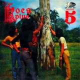
Volume 5
by Koes Plus
Rock • Pop • Folk • 1972
-
Nusantara
PLAY
-
-
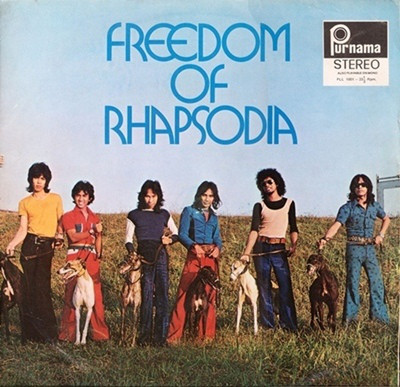
Freedom Of Rhapsodia
by Freedom Of Rhapsodia
Rock • Psychedelic Rock • 1972
-
Freedom
PLAY
-
-
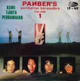
Volume 1
by The Panber's
Rock • Psychedelic Rock • 1972
-
Djakarta City Sounds
PLAY -
Haai
PLAY
-
-
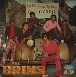
Album 1
by The Brims
Psychedelic Rock • 1972
-
Anti Gandja
PLAY
-
-
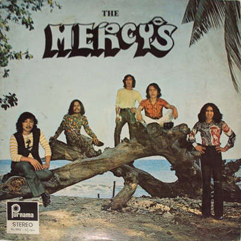
The Mercy's
by The Mercy's
Psychedelic Rock • 1973
-
Tiada Lagi
PLAY
-
Indorock
The Tielman Brothers were the first Dutch-Indonesian band to successfully enter the international scene in the 1950s. Their music was rock and roll, but people in the Netherlands used to call their music Indorock, a blend of Indonesian and Western music, and had elements of Keroncong.
-
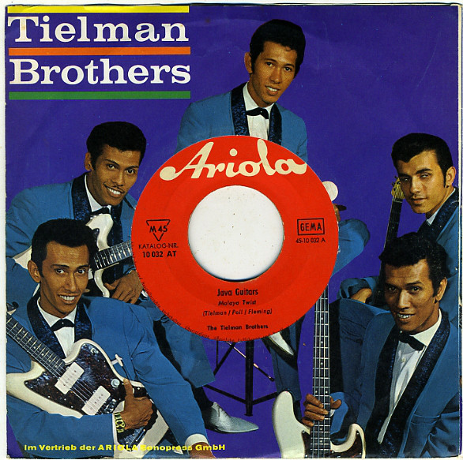
Java Guitars
by The Tielman Brothers
Rock • Surf • Rock & Roll • 1962
-
Java Guitars
PLAY
-
-
Tahiti Jungle
by The Tielman Brothers
Rock • Surf • Rock & Roll • 1962
-
Tahiti Jungle
PLAY
-
-
Little Bird
by The Tielman Brothers
Rock • Rock & Roll • 1968
-
Goodbye Mama
PLAY
-
-
The Essential Collection
by The Tielman Brothers
Rock • Surf • Rock & Roll • 1968
-
Bossa Nova Baby (live)
PLAY -
Rollin' & Rock (Live)
PLAY
-
Hip-Hop
In Indonesia, hip-hop started as an underground subculture in the early 90's, kickstarted by the full-length album released by the legendary Iwa-K. For a decade this movement stayed in underground and not as popular as other genres. But now the table is flipped! Two years back, in 2016 song called 'Dat $tick' reached US top-charts.
-
Kuingin Kembali
by Iwa-K
HipHop • Rap • 1990
-
Batman Katsarung
PLAY
-
-
Pesta Rap
by Various Artist
Rap • 1995
-
Cewe Matre by Black Swim
PLAY -
Bosan by Blake
PLAY -
E..E.. by Ucoq
PLAY -
Watchout Dab by G-Tribe
PLAY -
Janji Palsu by Coro Kru
PLAY -
Kaum Kumuh by Black Kumuh
PLAY -
Aku by MC-Q'lo
PLAY -
TV Rusak by Sindikat 31
PLAY -
West Side Jam by Rovi & D-Fha
PLAY -
Nyamuk by Boyz Got No Brain
PLAY
-
-
Topeng
by Iwa-K
HipHop • Rap • 1990
-
Tikus Got
PLAY
-
Pop
If you are an Indonesian pop song fanatic, you will definitely laugh at this list. But you know that it's a humongous task to list out all the good pop songs. So instead of that, I'm sharing my personal favourite Yanti Bersaudara and two more artists that I collected.
-
Sinbad
by Yanti Bersaudara
Pop • 1967
Sinbad
PLAY
-
Anggrek Merah
by Yanti Bersaudara
Pop • 1971
Tannase
PLAY
-
Yanti Bersaudara
by Yanti Bersaudara
Pop • 1971
Lembur Kuring
PLAY
-
Jingga
by Jingga
Pop • 1995
Tentang Aku
PLAYAku Dalam Manusia
PLAY
-
Outbox
by RNRM
Pop • Synth • 2007
Zsa Zsa Zsu
PLAY
Reggae / Ska
The history of reggae starts in the beachside bars of Bali. Initially, it was played for the foreginer's, but over the time the local people started getting the hang of the rhythms and slowly started building popularity. Now they have Tony Q, Steve & the Coconut Treez, Tipe-X (a 3rd wave Ska band) and many more.
-
Anak Pantai
by Imanez
Reggae • Rock & Roll • 1994
Anak Pantai
PLAYIkan Bakar
PLAY
-
Ska Phobia
by Tipe-X
Ska • Rock • Punk • 1999
Angan
PLAYFrustasi
PLAYGenit
PLAY
-
Damai Dengan Cinta
by Tony Q Rastafara
Reggae • 2000
Pesta Pantai
PLAY
-
The Other Side
by Steven & Coconut Treez
Reggae • Reggae-pop • 2005
Welcome To My Paradise
PLAYKembali
PLAYLong Time No See
PLAY
-
Good Atmosphere
by Steven & Coconut Treez
Reggae • Reggae-pop • 2008
Lagu Santai
PLAY
-
Salam
by Ras Muhamad
Reggae • 2015
Salam
PLAY
Funk
I think this is one of the least popular genre in Indonesia. But whatever track exists are in it's finest form - funky beats, synths, groovy baselines and James Brown-ish way of sing, totally I love it.
-
The Rollies
by The Rollies
Funk • Soul • 1972
Bad News
PLAY
-
Philosophy Gang
by Harry Roesli Gang
Funk • Jazz • Rock • 1973
Don't Talk About Freedom
PLAY
-
Shake Me
by AKA
Funk • Rock • 1975
Shake Me
PLAY
Jazz
1920, the birth of Jazz in Indonesia. W.M. van Eldik formed the Black & White Band with his violin-playing 17-year-old brother-in-law Wage Rudolf Supratman, now better known as the composer of the country’s national anthem Indonesia Raya.
-
Mystical Mist
by Krakatau
Jazz • Gamelan • Fusion • 1994
Kutemukan
PLAYImpen Impenan
PLAY
-
Magic Fingers
by Balawan
Jazz • Rock • Fusion • 2005
Prelude
PLAYMagic Reong
PLAY
-
Welcome to Bali
by Kulkul
Jazz • Gamelan • Fusion • 2005
Datanglah
PLAYUluwatu
PLAY
Keroncong
Keroncong is the oldest west influence in Indonesia music. This style originated among the Portuguese sailor's who bought this to Indonesia during the 17th century and it's still you can find recorders and listeners across Indonesia.
-
Keronchong Warna-Warni
by The Steps
Folk • Keroncong • 1969
Mata Ayer
PLAY
-
Bengawan Solo
by Gesang
Folk • Keroncong • 1991
Bengawan Solo
PLAY
Dangdut
Dangdut is an Indonesia folk genre with a blend of Hindustani, Malay and Arabic music. Being an Indian this genre seems very fascinating because almost all the songs sound very Indian.
-
Cinta Ketok Magic
by Evie Tamala
Folk • Dangdut • 1991
Cinta Ketok Magic
PLAY
-
Kertas & Api
by Mansyur S
Folk • Dangdut • 1992
Kertas & Api
PLAY
Electronic
This is one genre I still didn't dig much. But you I found a drum n bass compilation. Apart from pure electronic forms, you can find a lot of electronic influence pop bands like Rock n Roll Mafia.
-
Frekuensi Domestik
by Various Artists
Electronic • Drum n Bass • 2011
Latenight Raider by Olisimus
PLAY
Avant-Garde
If you take any country, It's not that easy to find avant-garde music, but not in Indonesia. Because they got Kelakar. Kelakar is an experimental band, focused on reggae, rock and thrash style crossover. It will be hard to digest in the beginning, but if you spend some time with the music, it will open another dimension.
-
Mari Kita Mulai!!!
by Kelakar
Avant Garde • Experimental • Cross Over • 2015
Melted
PLAY
Folk
Finally, we reached the last section. So far we listen to all the western influences in Indonesia, now its time for something which is very native.
-
Java - The Atmosphere
by Andre Mayorga
Gamelan • Ambient • Lounge • 2015
-
Tiupan Angin
PLAY -
Panen Raya
PLAY Woro Woro
PLAY
-
“Ketuhanan Yang Maha Esa. Kemanusiaan Yang Adil dan Beradab. Persatuan Indonesia. Kerakyatan Yang Dipimpin oleh Hikmat Kebijaksanaan, Dalam Permusyawaratan Perwakilan. Keadilan Sosial bagi seluruh Rakyat Indonesia.”
by Suyash Katiyar –
Rock • Blues Rock • Hard Rock • 1968 - 1962
“One of the first songs to ever pique my interest in LedZepplin was “Battle Of Evermore”, first heard at a friend’s home, the song’s name eluded me for sometime. It was not until few months later in a pub called “Pecos” (formely “Stones”), I heard the song again and rushed to the manager to know its name. Since then over period of last few years, LedZeppelin has kept me spellbound. This playlist is collection of songs which have left a profound impact and wont be ever forgotten.”
Track List:
Misty Mountain Hop - Led Zeppelin IV • Black Dog - Led Zeppelin IV • Bron-Y-Aur Stomp - Led Zeppelin III • Whole Lotta Love - Led Zeppelin II • Down By the Seaside - Physical Graffiti • Good Times Bad Times - Led Zeppelin • Going to California - Led Zeppelin IV • Bonzo's Montreux - Coda • The Battle of Evermore - Led Zeppelin IV • No Quarter - House of the Holy • Your Time is Gonna Come - Led Zeppelin • Black Mountain Side - Led Zeppelin • Kashmir - Physical Graffiti • When the Levee Breaks - Led Zeppelin IV • Tangerine - Led Zeppelin III • All My Love - In Through the Out Door • Nobody's Fault But Mine - Presence • In My Time of Dying - Physical Graffiti • Stairway to Heaven - Led Zeppelin IV • Bron-Yr-Aur - Physical Graffiti

Chicano Blues
Funky Aztecs
Hip Hop • Latin • Gangsta • Chicano Rap • 1992
Viva La Raza! You can call this album as a page in the history book of Mexican-American history and Chicano Movement. Because Funky Aztecs a.k.a pioneers of Chicano rap tried to reunite and bring peace between the Mexican-American gangs Norteños and Sureños through this album. Another interesting fact about this album is its album cover. The cover represents the Norteños in red and Sureños in blue (the gang colour itself) with same dress and the same number of people to show both are same in everything. All the tracks on Chicano Blues are amazing. English, Spanglish and good enough rapping. Don’t miss this album. Otherwise, you will miss history.


The First Time
Jackie Chan
Mandopop • World • Regional • 1992
Most of the people only know about Jackie Chan’s movie career. But do you know, more than an actor, his is a wonderful singer! From 1984 to 2008, he had release around 11 albums, recorded theme songs for movies and Beijing Olympics closing song. Most of his songs are in Japanese and Cantonese, but there are some English song too. The First Time is pure Mandopop, and all the songs will remind you about the background score on Jackie's movie like city hunter. So, amigos, plug you ear phone, romance is on the way.


Songs I Keep Coming Back To
Various Artist – currated by Sushant Naithani (Mojo Jojo)
Rock • Hard Rock • Alternative Rock • Psy Rock • Prog Rock • Symphonic Rock • Classic Rock • Heavy Metal • Folk Rock • Grunge • 80's - 90's


Doesn’t Remind Me by Audioslave
This song captures the essence of this supergroup called Audioslave. Coupled with an beautifully story driven video, cornell’s vocals and morello’s restrained guitar work makes this my favorite audioslave song ever
Blackbird by Alter Bridge
This was one of the first songs I ever heard from this group. Needless to say hearing myles’s soaring vocals and mark and myles tasty guitar playing made me a fan.
Anesthetize by Porcupine Tree
Steven Wilson is God. I really like lengthy songs that encapsulate my attention way more than 2-3 minute pop songs. This song is definitely a master piece combing all the genres I am into. I really enjoy gavin’s playing here.
Drive Home by Steven Wilson
Listening to this song will make you cry. This my favorite Steven Wilson song ever. This song has an amazingly done but incredibly sad video and some heart wrenching guitar playing by Guthrie.
Turn the Page by Metallica
I have heard this song a million times yet I never got sick of it. This was the song that introduced me to Metallica and I am thankful for that. Even though its a cover song I believe this song is Metallica.
Hallelujah by Jeff Buckley
This song is so minimal with just guitar accompanied by buckley’s vocals and it still sounds great and soothing to the ear and makes my heart warm.
Shine on You crazy Diamond by Pink Floyd
I don’t think this song needs any introduction. If I had to listen just one song for the rest of life This song would be it.
Parabol, Parabola by Tool
I love, love Tool. It was incredibly difficult for me to pick just one song out of their entire catalogue but this song (actually two songs) is what I have heard on repeat numerous times & is one of my favorite tool tunes.
Glass Arm Shattering by Porcupine Tree
This song sounds so delicate, so fragile. This song for me was the highlight of Deadwing album.
Heart shaped Box by Nirvana
When I think of Nirvana I always think of this song. This song was one of the first I ever heard from Nirvana and needless to say I became a lifelong fan.


-

Noom Rave
Various Artist
Hard Trance • Acid • Techno • 1993 - 99
Listen nowIf you are a witness of the 90's rave parties, then Noom Records won't be stranger for you. And for those who don't know, it's the one the most respected label among the raver's. So today, I'm presenting you a 26 tracks compilation of all-time 90's rave classics from Noom Records including Nuclear Hyde, Jim Clarke, Mandala and many more. In brief, this playlist is nothing but, a powerhouse of acid and base - No Noise, Just Classics!


Playlist Brief: Smoking Drums by Jim Clarke (1993), The Encore by Mandala (1993), Silverstone by Jim Clarke (1993), The Fall by Superspy (Oliver Lieb) (1993), Daytona by Jim Clarke(1993), Observer by Nuclear Hyde (1994), Astralia by Mandala (1994), Osmosis by Nuclear Hyde (1994), Love Dove by Instant Zen (1994), Inverse Reflexion by Nuclear Hyde (1994), Synthetic by Instant Zen (1994), Tranceido by Tandú (1994), Leloopa by Traumatic (1994), Innostatic by Nuclear Hyde (1995), Are am Eye? by Commander Tom (1995), Acidney (Cores Remix) by Mandala (1995), Running Man by Nuclear Hyde (1996), Ice Rain by Cores (1996), Lonely Days (Lonely Mix) by Comma (1996), Accelerator by Nuclear Hyde (1997), Multica by Cores (1997), Skydome by Toronto (1997), Androgyn by T & T (1997), Rest In Hell (Chris Liberator & Dave The Drummer Remix) by CFC-12 (1997), Spacetrash by Cores (1998), Hot Music by Lost In Case (1999)
-

Before, in India
Various Artist
Funk/Soul • Psychedelic Rock • Jazz • Garage Rock • Techno • Acid • Pop Rock • Rock n Roll • Blues • 60's - 80's
Listen nowEven if it's late, but I found a pot full of gold, nothing but a grand collection of tracks depicting India's music culture from the 60's to 80's. I consider these tracks as one of my best dig till the date, because I never knew such genres existed in India. So I though of picking some track and presenting it for you. This playlist contains 17 tracks including jazz, rock, funk and many more styles. Consider this playlist as a journey through the underground, elite balls and the hippie trails of India. Enjoy!


Playlist Brief: The list starts with a jazz track Raga Kalavati by the Bollywood maestro's Shankar and Jaikishan (1964), followed by song called Trip by Usha Iyer & The Flintstones (1969), Jumpin' Jack Flash by Ananda Shakar (1970), Mist by Great Bear (1970), Baby Baby Please by Innerlite (1970), The Mod Trad by The Black Beats (1971), Until the Dawn by The Fentones (1971), Obsession and Butterfly I from Atomic Forest (1973), Born to be Wild by The Savages (1973), Right Down Here by Asha Puthli (1973), Dancing Drum by Ananda Shankar (1975), Atrip to Kathmandu by Bharat Karki & Party (1978), Mind Ecology and Two Sisters by Shakti (1977) and Raga Megha Malhar by Charajith Singh (1983).
-

Afternoon Inspiration
Various Artist - currated by Rabi.C.Shah
Rock • Punk • 70's - 00's
Listen nowThis playlist invigorates me when I am looking for inspirations, especially in the afternoon. A compilation of my favourite tracks. The playlist consist of classic rock and a little bit of punk. All I do is listen to it and let my thoughts flow and also ebb away any new feelings I encounter.


-

Le Monde Fabuleux Des Yamasuki
Yamasuki Singers
Funk • Rock • World • 1971
Listen now"a fuzzed-out-educational-multi-cultural psych-rock-opera.... proto-psychedelic hip-hop with overweight drum beats and basslines" - Le Monde Fabuleux Des Yamasuki by Yamasuki Singers. Yamasuki Singers is a pop group based out of France who learned Japanese and depicted the culture of Nippon into 12 tracks.
-

Obsession
Atomic Forest
Pshychedelic • India • 1973 - 77
Listen nowAtomic Forest stands as the only Indian psychedelic/hard rock band that managed to record an album: Obsession '77. They jammed with Led Zeppelin and performed at the Snehayatra Festival ‘The Indian Woodstock'. This album is fuzzy, groove and funky enough. Atomic Forest's is an unsung band in Indian who can depict the underground scene of India in the 70's. If you are not a fan of Psychedelic, but I suggest, listen to the first track of this album. I don't have any words to describe the energy of the song, the drum and the lead will blow you away, better you hear it.
-

Ten Ragas to a Disco Beat
Charanjit Singh
Acid House • Fusion • India • 1982
Listen nowThis record is a remarkable piece of the history of music. You can call this album as the spark that led to the existence of Acid House. An excellent collection of fascinating and mesmerising songs, built with a combo Roland TR-808 drum machine, TR-303 bass synthesiser and Jupiter-8 synthesiser. By having the historical value, this record is one of the most valued that ever sold on Discogs.
-

Maori Pulse
Various Artists
World • Maori • Folk • Rock • Reggae
Listen nowA collection of exotic tunes from the Pacific archipelagoes. The playlist starts with a positive Maorian vibe by Te Vaka followed by the Bobby Holcomb, Matato'a, Polynesia, Whirimako Black and much more. Most of the songs are a fusion of Maorian with western styles like rock and reggae.
-

Techno City
Various Artists
Techno • Detroit
Listen nowDuring the early industrial gambling of America, Detroit and its people was a significant stake. But later on the game, the gears of Detroit started rusting, and the people end up in a mechanical boredom. To revive and reunite the energy, the talent's of Detroit introduced a new genre called Techno. So this playlist is a dive into the heart of the Detroit.
-

We Love Bersaudara
Yanti Bersaudara
World • Rock • Folk • Indonesia •
Listen nowYanti Bersaudara is a female musical trio from Indonesia during the 70's. Gaslamp Killer introduced this band to me through a sample of the song Lembur Kuring. And it was a perfect psychedelic groove. This playlist features vinyl rip of selected work by the three sisters.
-

Sound of Siam
Various Artists
World • Jazz • Leftfield Luk Thung • Molam • Thailand – 1964 to 1975
Listen nowMore than a renowned tourist place, Thailand it's a musical paradise even from the 60's and 70's. It spaced out jazz, raw funk or the meditative sounds of the North East. Check out the marvellous gem from the south-east Asia.
-

Djam Leelii
Baba Maal & Mansour Seck
Folk • Blues • World • Country — 1989
Listen nowThank you, for the peacefulness! Djam Leeli is a great experience in itself. If you want to take a free trip to Africa, listen to this album. Every element in this album will make feel you are in Africa. If you had never listened to Baaba Maal before, this album will be a good start. Don’t miss his unique voice. If you want to stay peaceful for an hour plug you headphone or put your sound system on, and play this album. So don’t forget to listen to this album, which is also listed as one in the “1001 Albums You Must Hear before You Die”.


...
...
Source - Youtube